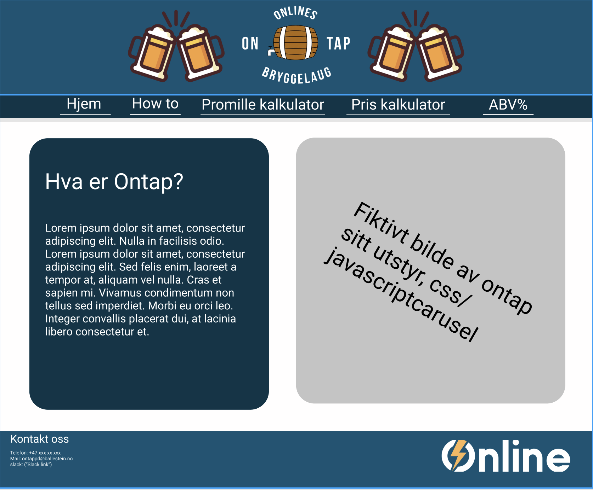

Administrative details
- Group members: Sander, Benjamin, Oskar, Markus and Naqib
- October.7.2021
- Ontap
- Contact for Ontap: Hjalti Hjaltason
Our client is an interest group for informatics students at NTNU Trondheim. Ontap is an interest group for students who like brewing beer. When we got an assignment from our lecturer to build a website. Our group sent an email asking Ontap if they wanted us to build a new website for them. They wanted a website, so we sat up a meeting, where they explained what they were requiring from this website.
Purpose, goals, and audience
The main purpose of this website, is to act as a homepage for the Ontap-group. This is to bring all the ones who like brewing beers and other alcoholic beverages together. It will also serve as a toolbox for Ontap-brewers, through the functional requirements of the site. The site will include information about Ontap as a whole and information about to brew. This will mainly come as YT videos on the site. The main goal, is to create a website that will catch the interest of the audience, and make it easier for new ontap-members to get started with the brewing.
Page Layout and Appearance
When we tried to find out our universal design, we had keep in mind that Hjalti wanted the webiste to have the colors of online.
This was in order to make sure the users understood that Ontap is a part of Online. The colors unite the two. There are also some beers on either side of the logo.
This was made in order to show what goes on on the site. This was a fun touch to make the site feel more alive and fun.
The navigationbar has a darker shade of blue in order to break away from the main color. This is to add more detail to the site.
By having the same navigationbar on the top of the page for alle of the pages on the site, there is a clear red line that the users follow on all the different subsections on the site.

The specific styling for the webpage will be described below.
- Color theme
- Text: Black
- Background: White
- Logo backgroundcolor: The logo will be on a backgroundcolor that is the same as Online's homepagecolors. rgb(13, 84, 116)
- NavBar: rgb(8, 52, 72)
- When you hover over any link on the navigationbar it will have a white border around it.
- The subsection where you are on the page will be in a ligther shade of blue than the restof the bar. rgb(13, 84, 116)
- Bodywidht: 80%
- Font: "Source Sans Pro", sans-serif
- The Navbar: The navigationbar will have links that go to each of the subsections of the website.
- Placement of the Navbar: We have decided to put the navigationbar on the top of the page since thsi is how it is done on Online's page. It is also very clean and a makes the site sees professional.
- Logo: The logo will be centered on the navigationbar. It will have two beers
- Footer: The footer will have conctact information to reach Ontap on mail, phone and Slack.
Content
Our website will have five separate pages:
-
Homepage.html:
When the users will visit our website, this is the page they will see. In this page our users can read about Ontap and it's history. The footer will contain Ontap's contact informations such as phone nummber, email address and slack link. The same footer will be inculded in every pages of our website. We also inculded Online's logo at the right side of the footer. This page will also feature a slideshow of pictures that are related to Ontap, which you can read more about in the minimum requirments. -
promillekalkulator.html:
In this page we will have a calculator that will calculate alcohol level in your body. The users can access this page by clicking on the (promille kalkulator) on the menuebar. This calculator will have three inputs where the users have to gave the required informations to the program in order for program to calculate the alc level. We also have an output were the program wil excute the result. -
ABV.html
In this page we have another calculator, which allows users to calculate how much alcohol your beer will contain after brewing. This means the users use this calculator before they start brewing. The users can access this page by clicking (ABV% kalkulator), on the menuebar. This calculator will also have some inputs for users to enter informations for the program. But we do not know yet what kind of informations this calculator requires from the users, and how many inputs deos it need. -
Priskalkulator.html
This page is yet another calculator. Users can access this calculator by clicking (Pris kalkulator) on the menuebar. In this page users will be able to calculate price/per liter beer. we will include three inputs for users to enter the required informations. And of course we have outputs for the program to execute the result. Til now it looks like this calculator needs three outputs. Becuase it will execute three different results. -
How to:
This page will feature several videos that will show the user different steps when making beer. These videos will be embedded to the web page and will come from YouTube. The videos will help people that are new to brewing, by giving them a guide on how to get started. Hopefully this will engage the user to learn more about brewing and maybe even get engaged with Ontap.
Minimum Requirements
We plan to fullfil the Minimum requirements in of javascript by making three calculators and a slideshow:
-
Promille kalkulator:
This is a calculator that will allow the users to calculate how much alcohol they have in their bodys. The users have to choose their gender, enter their weight, when they started to drink and how many drinks they have had. -
ABV% kalkulator:
This calculator will calculate approximately how much alcohol the beer will contain after the brewing. This is information that is very useful when brewing beer and therefore a great tool to have on the website. The formula for ABV% is quite complicated and uses a specific formula. WE have not yet figured out what kind of information we need from the users, but Ontap ensured us in our first meeting that they will send us the formula they usually use in time for our project. -
Pris kalkulator:
This one is a calculator that calculates the price per person. The users have to enter how many people they are that are going to brew together, they also have to enter how many liters of beer they have brewed and how much did it cost in total. The calculator will calculate how many liters of beer every person gets. it will also calculate the price per person and price per liter. -
Slideshow:
This slideshow will be shown at the index page. It will include multiple pictures of equipment that Ontap has available and that the user can borrow. It will also include other pictures that are related to Ontap such as pictures of the brewing process, the finished beer, and more. The slideshow will be made using JavaScript and feature timed slides, but also buttons that will allow the user to change picture if they want to do it faster than what is timed. Ontap will supply us with these pictures, so there won’t be any issues with copyright.
Bla bla
Plan
Our plan for building the website consists of delegating tasks between all the programming languages we will be using. The website will need at least 3 HTML documents, 4 javascripts documents and 1 CSS document. We also need to find videoes for our "How to"-page and get photos from Ontappd. We will probably need two people to create the three HTML documents and two people to create the javascripts. The last person can create the the CSS stylesheet which will be used for all the HTML documents.